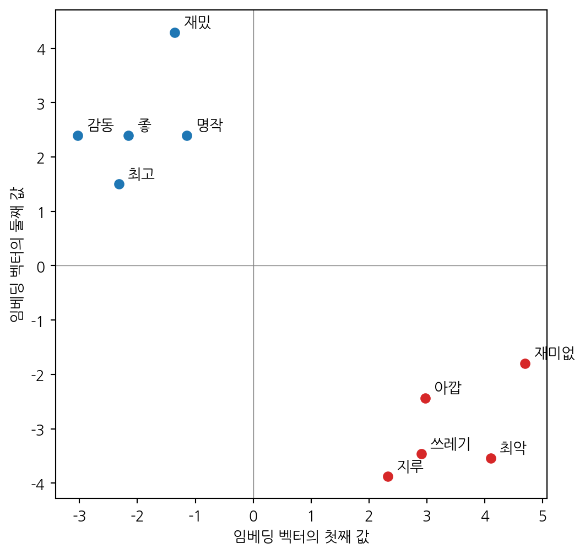

# ▶ 준비 셀 — 그대로 실행하세요.
import torch
torch.manual_seed(42)
print(torch.__version__)2.4.1+cu124
⏱ 95분 · 10장 실습 1/2
지금까지 신경망에 넣은 표와 사진은 처음부터 숫자였습니다. 문장은 글자로 되어 있습니다.
문장을 숫자로 바꾸면, 신경망이 영화평이 긍정인지 부정인지 맞힐까요?
문장 하나를 단어 번호, 원-핫 벡터, 임베딩 벡터로 차례로 바꿔 봅니다. 그다음 네이버 영화평 2만 개로 임베딩 층을 학습시키고, 학습된 임베딩 벡터를 평면에 그려 봅니다. 마지막에는 미리 학습된 트랜스포머로 같은 영화평을 분류합니다.
대응 이론: Ch10 순환신경망을 이용한 자연어 처리
Colab 설정: 메뉴 런타임 → 런타임 유형 변경 → T4 GPU를 고른 뒤 시작합니다. GPU는 10절에서 씁니다.
| 표시 | 뜻 |
|---|---|
| ▶ | 그대로 실행합니다 |
| ✍️ | 보여 준 코드를 손으로 타이핑해서 실행합니다. 빈칸 ___은 채웁니다 |
| 📝 | 과제. 힌트를 보고 스스로 풉니다 |
# ▶ 준비 셀 — 그대로 실행하세요.
import torch
torch.manual_seed(42)
print(torch.__version__)2.4.1+cu124PyTorch의 버전이 나옵니다. 다른 라이브러리는 필요한 셀에서 그때그때 불러옵니다.
신경망에는 숫자만 넣을 수 있으므로, 문장을 먼저 숫자로 바꿔야 합니다. 문장을 단어로 자르고 단어마다 번호를 붙입니다. 아래 코드는 문장 하나를 단어로 자르는 코드입니다.
# ✍️ 직접 입력
sentence = 'The kimchi was not bad.'
words = sentence.lower().replace('.', '').split() # 소문자로 바꾸고, 마침표를 지우고, 빈칸에서 자른다
print(words)['the', 'kimchi', 'was', 'not', 'bad']['the', 'kimchi', 'was', 'not', 'bad']가 나옵니다.
텍스트에 나오는 서로 다른 단어를 모은 목록을 어휘라고 합니다. 아래 코드는 이 문장의 어휘를 만드는 코드입니다.
# ✍️ 직접 입력
vocab = sorted(set(words)) # 겹치는 단어를 없애고 알파벳 순으로 늘어놓는다
print(vocab, len(vocab))['bad', 'kimchi', 'not', 'the', 'was'] 5['bad', 'kimchi', 'not', 'the', 'was']와 5가 나옵니다. 어휘는 다섯 단어입니다.
단어의 번호는 그 단어가 어휘의 몇 번째에 있는지로 정합니다. 파이썬은 0부터 세므로 bad가 0번, was가 4번입니다.
# ✍️ 직접 입력
ids = [vocab.index(w) for w in words] # 단어마다 어휘에서의 번호를 찾는다
print(ids)[3, 1, 4, 2, 0][3, 1, 4, 2, 0]이 나옵니다. 문장의 첫 단어 the는 3번이고, 넷째 단어 not은 2번입니다.
단어의 번호는 크기가 아니라 어떤 단어인지를 나타냅니다. 번호를 그대로 신경망에 넣으면 번호의 크기가 계산에 쓰이므로, 번호를 원-핫 벡터로 바꿉니다. 원-핫 벡터는 길이가 어휘의 크기와 같고, 그 단어의 번호 자리만 1이고 나머지는 0인 벡터입니다.
# ✍️ 직접 입력
import torch.nn.functional as F # 층을 만들지 않고 바로 쓰는 계산 함수들이 들어 있다
onehot = F.one_hot(torch.tensor(ids), num_classes=5) # 번호마다 길이 5인 원-핫 벡터로 바꾼다
print(onehot)tensor([[0, 0, 0, 1, 0],
[0, 1, 0, 0, 0],
[0, 0, 0, 0, 1],
[0, 0, 1, 0, 0],
[1, 0, 0, 0, 0]])줄 하나가 단어 하나입니다. 넷째 줄 [0, 0, 1, 0, 0]이 not의 원-핫 벡터이고, 2번 자리만 1입니다.
이 문장은 어휘가 다섯 단어라 원-핫 벡터의 길이가 5입니다. 어휘가 10,000 단어이면 단어 하나가 길이 10,000인 벡터가 되고, 그 가운데 9,999개가 0입니다.
길고 0이 대부분인 원-핫 벡터를 짧고 실수로 채워진 벡터로 바꾸는 것을 임베딩이라고 하고, 바뀐 벡터를 임베딩 벡터라고 합니다. 임베딩은 원-핫 벡터에 가중치 행렬을 곱해서 합니다. 어휘가 5 단어이고 임베딩 벡터의 길이를 2로 정하면 가중치 행렬은 5×2입니다. 아래 코드는 가중치 행렬 W를 하나 정하고, not의 원-핫 벡터에 곱하는 코드입니다.
# ✍️ 직접 입력
W = torch.tensor([[6., 5.], # 0번 bad
[4., 1.], # 1번 kimchi
[2., 8.], # 2번 not
[7., 9.], # 3번 the
[3., 6.]]) # 4번 was
print(onehot[3].float() @ W) # 문장의 넷째 단어 not의 원-핫 벡터에 W를 곱한다tensor([2., 8.])tensor([2., 8.])이 나옵니다. W의 2번 줄입니다. not의 원-핫 벡터는 2번 자리만 1이므로, 곱하면 W의 2번 줄만 남습니다.
그러므로 곱셈을 하지 않고 W에서 그 번호의 줄을 꺼내도 결과가 같습니다. 아래 코드는 문장의 다섯 단어를 두 방법으로 임베딩 벡터로 바꾸는 코드입니다.
# ✍️ 직접 입력
print(onehot.float() @ W) # 원-핫 벡터 다섯 개에 W를 곱한다
print(W[ids]) # W에서 3, 1, 4, 2, 0번 줄을 꺼낸다tensor([[7., 9.],
[4., 1.],
[3., 6.],
[2., 8.],
[6., 5.]])
tensor([[7., 9.],
[4., 1.],
[3., 6.],
[2., 8.],
[6., 5.]])두 결과가 같습니다. W의 줄 하나가 단어 하나의 임베딩 벡터입니다.
PyTorch의 nn.Embedding은 이렇게 번호로 가중치의 줄을 꺼내는 층입니다. 이 층을 임베딩 층이라고 합니다. 아래 코드는 단어 5개를 길이 2인 벡터로 바꾸는 임베딩 층을 만들고, 그 가중치를 확인하는 코드입니다.
# ✍️ 직접 입력
import torch.nn as nn # 신경망의 층들이 들어 있다
emb = nn.Embedding(5, 2) # 단어 5개를 길이 2인 벡터로 바꾸는 임베딩 층
print(emb.weight)Parameter containing:
tensor([[ 0.3367, 0.1288],
[ 0.2345, 0.2303],
[-1.1229, -0.1863],
[ 2.2082, -0.6380],
[ 0.4617, 0.2674]], requires_grad=True)5×2 가중치가 나옵니다. 처음에는 임의의 값이 들어 있고, 다른 층의 가중치처럼 학습하면서 바뀝니다. 임베딩 층에는 편향이 없으므로 파라미터는 5 × 2 = 10개입니다.
임베딩 층의 가중치를 위의 W로 바꾸고, 문장의 단어 번호를 넣어 봅니다.
# ✍️ 직접 입력
with torch.no_grad(): # 학습이 아니라 값을 직접 넣는 것이므로 기울기는 계산하지 않는다
emb.weight.copy_(W) # 가중치를 W로 바꾼다
print(emb(torch.tensor(ids))) # 단어 번호 다섯 개를 넣는다tensor([[7., 9.],
[4., 1.],
[3., 6.],
[2., 8.],
[6., 5.]], grad_fn=<EmbeddingBackward0>)위의 두 결과와 같은 값이 나옵니다. 임베딩 층에는 원-핫 벡터를 만들지 않고 단어 번호를 그대로 넣습니다.
지금까지는 문장을 단어로 잘랐습니다. 실제 언어 모델은 문장을 토큰이라는 단위로 자릅니다. 자주 쓰이는 단어는 단어 하나가 토큰 하나가 되고, 드물게 쓰이는 단어는 여러 조각으로 나뉘어 조각 하나가 토큰 하나가 됩니다. 문장을 토큰으로 자르는 도구를 토크나이저라고 합니다. 아래 코드는 언어 모델 GPT-2의 토크나이저를 내려받아 같은 문장을 자르는 코드입니다.
# ✍️ 직접 입력
from transformers import AutoTokenizer # 공개된 언어 모델의 토크나이저를 내려받는 도구
gpt2_tok = AutoTokenizer.from_pretrained('gpt2') # GPT-2의 토크나이저
print(gpt2_tok.tokenize(sentence)) # 문장을 토큰으로 자른다
print(gpt2_tok.vocab_size) # 어휘에 든 토큰의 수['The', 'Ġk', 'im', 'chi', 'Ġwas', 'Ġnot', 'Ġbad', '.']
50257['The', 'Ġk', 'im', 'chi', 'Ġwas', 'Ġnot', 'Ġbad', '.']와 50257이 나옵니다. Ġ는 그 토큰 앞에 빈칸이 있었다는 표시입니다. was, not, bad는 단어 하나가 토큰 하나입니다. 영어 텍스트에 드물게 나오는 kimchi는 k, im, chi 세 토큰으로 나뉘고, 마침표도 토큰 하나가 됩니다. GPT-2의 어휘에는 토큰이 50,257개 있으므로, 토큰 하나를 원-핫 벡터로 만들면 길이가 50,257입니다.
토크나이저에 문장을 그대로 넣으면 토큰의 번호가 나옵니다.
# ✍️ 직접 입력
print(gpt2_tok(sentence)['input_ids']) # 토큰 여덟 개의 번호[464, 479, 320, 11072, 373, 407, 2089, 13][464, 479, 320, 11072, 373, 407, 2089, 13]이 나옵니다. 토큰 여덟 개가 어휘에서의 번호 여덟 개로 바뀌었습니다. 1절에서 단어를 번호로 바꾼 것과 같은 일입니다.
이제 실제 데이터로 임베딩 층을 학습시킵니다. 네이버 영화평 데이터는 영화평 20만 개에 긍정이면 1, 부정이면 0을 붙여 둔 공개 데이터셋입니다. 훈련용 15만 개와 테스트용 5만 개로 나뉘어 있습니다.
# ▶ 그대로 실행하세요 — 영화평 데이터 내려받기(약 19MB)
import os, urllib.request
import pandas as pd
os.makedirs('../data', exist_ok=True)
for name in ['train', 'test']:
path = f'../data/nsmc_{name}.txt'
if not os.path.exists(path): # 이미 받아 두었으면 건너뛴다
urllib.request.urlretrieve(f'https://raw.githubusercontent.com/e9t/nsmc/master/ratings_{name}.txt', path)
# 탭으로 나뉜 표를 읽고, 영화평이 비어 있는 줄은 뺀다
train_df = pd.read_csv('../data/nsmc_train.txt', sep='\t').dropna()
test_df = pd.read_csv('../data/nsmc_test.txt', sep='\t').dropna()
print(len(train_df), len(test_df))149995 49997수업 시간 안에 학습이 끝나도록, 훈련용 2만 개와 테스트용 5천 개만 무작위로 골라 씁니다.
# ✍️ 직접 입력
train_df = train_df.sample(20000, random_state=42) # 무작위로 20,000개를 고른다
test_df = test_df.sample(5000, random_state=42) # 무작위로 5,000개를 고른다
print(train_df.head()) id document label
128076 7865795 원본이 최고 1
65517 5417631 스릴감과 훈훈함이 있는 영화. 1
85048 8357466 굉장히 저평가되는 영화중 하나라고 생각함 1
118192 8252946 정말영화같은이야기 영화여서 영화같은이야기가 좋다 1
92368 7800452 계기도없는데 이상하다 0document 열이 영화평이고, label 열이 정답입니다. 첫 영화평 원본이 최고의 정답은 1, 곧 긍정입니다.
한국어 영화평은 한국어 텍스트로 만든 토크나이저로 자릅니다. 아래 코드는 한국어 언어 모델 klue/bert-base의 토크나이저를 내려받아 문장 하나를 자르는 코드입니다.
# ✍️ 직접 입력
tok = AutoTokenizer.from_pretrained('klue/bert-base') # 한국어 토크나이저
print(tok.vocab_size)
print(tok.tokenize('지루하지 않고 재미있다'))32000
['지루', '##하', '##지', '않', '##고', '재미있', '##다']32000과 ['지루', '##하', '##지', '않', '##고', '재미있', '##다']가 나옵니다. 어휘에는 토큰이 32,000개 있고, 이 문장은 토큰 일곱 개로 잘립니다. ##은 앞 토큰에 붙여 쓰는 조각이라는 표시입니다.
영화평마다 토큰의 수가 다릅니다. 여러 영화평을 텐서 하나에 담으려면 길이가 같아야 하므로, 정한 길이보다 긴 영화평은 뒤를 자르고 짧은 영화평은 뒤를 0번 토큰으로 채웁니다. 이렇게 길이를 맞추려고 채우는 것을 패딩이라고 합니다. 아래 코드는 문장 두 개를 길이 8로 맞춰 토큰 번호로 바꾸는 코드입니다.
# ✍️ 직접 입력
out = tok(['재미있다', '지루하지 않고 재미있다'],
padding='max_length', # 짧은 문장은 뒤를 0번 토큰으로 채운다
truncation=True, # 긴 문장은 뒤를 자른다
max_length=8, # 맞출 길이
add_special_tokens=False, # 문장의 시작과 끝을 알리는 토큰은 붙이지 않는다
return_tensors='pt') # 결과를 PyTorch 텐서로 받는다
print(out['input_ids'])tensor([[6001, 2062, 0, 0, 0, 0, 0, 0],
[9734, 2205, 2118, 1380, 2088, 6001, 2062, 0]])두 줄 모두 길이가 8입니다. 첫 문장은 토큰이 두 개라 나머지 여섯 자리가 0이고, 둘째 문장은 토큰이 일곱 개라 마지막 한 자리가 0입니다.
같은 방법으로 영화평 전체를 길이 40으로 맞춥니다.
# ▶ 그대로 실행하세요 — 영화평 전체를 토큰 번호로 바꾸기
# 영화평 여러 개를 받아, 영화평마다 토큰 번호 40개로 바꾼 텐서를 돌려주는 함수
def encode(texts):
out = tok(list(texts), padding='max_length', truncation=True, max_length=40,
add_special_tokens=False, return_tensors='pt')
return out['input_ids']
X_train = encode(train_df['document'])
X_test = encode(test_df['document'])
y_train = torch.tensor(train_df['label'].to_numpy()) # 정답 (0 부정, 1 긍정)
y_test = torch.tensor(test_df['label'].to_numpy())
print(X_train.shape, y_train.shape)
print(X_train[0], y_train[0])torch.Size([20000, 40]) torch.Size([20000])
tensor([15548, 2052, 3841, 0, 0, 0, 0, 0, 0, 0,
0, 0, 0, 0, 0, 0, 0, 0, 0, 0,
0, 0, 0, 0, 0, 0, 0, 0, 0, 0,
0, 0, 0, 0, 0, 0, 0, 0, 0, 0]) tensor(1)X_train의 모양은 torch.Size([20000, 40])입니다. 영화평 20,000개가 각각 토큰 번호 40개입니다. 첫 영화평 원본이 최고는 토큰이 세 개이고 나머지 37자리는 0입니다.
영화평 하나는 토큰 번호 40개입니다. 이를 임베딩 층에 넣으면 임베딩 벡터 40개가 됩니다. 긍정과 부정을 가르려면 영화평 하나가 벡터 하나여야 하므로, 토큰들의 임베딩 벡터를 평균합니다. 그 평균 벡터를 분류 층에 넣어 부정과 긍정의 점수를 냅니다. 먼저 영화평 4개로 한 단계씩 확인합니다.
# ✍️ 직접 입력
x = X_train[:4] # 영화평 4개
emb = nn.Embedding(32000, 2, padding_idx=0) # 토큰 32,000개를 길이 2인 벡터로 바꾼다
e = emb(x)
print(e.shape)torch.Size([4, 40, 2])torch.Size([4, 40, 2])가 나옵니다. 차례로 영화평의 수, 토큰의 수, 임베딩 벡터의 길이입니다. padding_idx=0은 패딩에 쓴 0번 토큰의 임베딩 벡터를 [0, 0]으로 고정합니다. 그러므로 패딩은 임베딩 벡터의 합을 바꾸지 않습니다.
평균은 임베딩 벡터의 합을 실제 토큰의 수로 나눠서 구합니다.
# ✍️ 직접 입력
n = (x != 0).sum(dim=1, keepdim=True) # 영화평마다 번호가 0이 아닌 토큰, 곧 실제 토큰의 수
print(n)
v = e.sum(dim=1) / n # 토큰 40개의 벡터를 더해 실제 토큰의 수로 나눈다
print(v.shape)tensor([[ 3],
[10],
[11],
[17]])
torch.Size([4, 2])첫 영화평의 실제 토큰 수는 3입니다. v의 모양은 torch.Size([4, 2])로, 영화평 하나가 길이 2인 벡터 하나가 되었습니다.
# ✍️ 직접 입력
fc = nn.Linear(2, 2) # 평균 벡터를 받아 부정(0)과 긍정(1)의 점수를 낸다
print(fc(v).shape)torch.Size([4, 2])torch.Size([4, 2])가 나옵니다. 영화평마다 점수가 2개입니다.
세 단계를 모델 하나로 묶습니다. 아래 코드는 임베딩 층, 평균, 분류 층을 차례로 거치는 모델입니다.
# ✍️ 직접 입력
class ReviewModel(nn.Module):
def __init__(self):
super().__init__()
self.emb = nn.Embedding(32000, 2, padding_idx=0) # 임베딩 층
self.fc = nn.Linear(2, 2) # 분류 층
def forward(self, x):
e = self.emb(x) # 토큰마다 임베딩 벡터로 바꾼다
n = (x != 0).sum(dim=1, keepdim=True) # 영화평마다 실제 토큰의 수
v = e.sum(dim=1) / n # 토큰 벡터의 평균
return self.fc(v) # 부정과 긍정의 점수
torch.manual_seed(42)
model = ReviewModel()
print(model(x).shape)
print(sum(p.numel() for p in model.parameters())) # 파라미터의 수torch.Size([4, 2])
64006torch.Size([4, 2])와 64006이 나옵니다. 임베딩 층의 가중치가 32,000 × 2 = 64,000개이고, 분류 층의 가중치 4개와 편향 2개를 더해 64,006개입니다. 파라미터의 대부분이 임베딩 층에 있습니다.
학습 함수와 평가 함수는 사진을 분류할 때 쓴 것과 같습니다.
# ▶ 그대로 실행하세요 — 학습·평가 함수
# 한 에폭 동안 학습하고, 평균 손실을 돌려준다
def train_one_epoch(model, loader, criterion, optimizer):
model.train()
total = 0.0
n = 0
for xb, yb in loader:
optimizer.zero_grad()
loss = criterion(model(xb), yb)
loss.backward()
optimizer.step()
total += loss.item() * len(yb)
n += len(yb)
return total / n
# 학습 없이 평균 손실과 정확도를 잰다
def evaluate(model, loader, criterion):
model.eval()
total = 0.0
correct = 0
n = 0
with torch.no_grad():
for xb, yb in loader:
out = model(xb)
total += criterion(out, yb).item() * len(yb)
correct += (out.argmax(1) == yb).sum().item()
n += len(yb)
return total / n, correct / n아래 코드는 로더, 손실 함수, 옵티마이저를 만들고, 학습하기 전의 테스트 손실과 정확도를 보는 코드입니다.
# ✍️ 직접 입력
from torch.utils.data import TensorDataset, DataLoader # 텐서를 데이터셋으로 묶고, 묶음으로 꺼내 준다
torch.manual_seed(42)
train_loader = DataLoader(TensorDataset(X_train, y_train), batch_size=64, shuffle=True)
test_loader = DataLoader(TensorDataset(X_test, y_test), batch_size=1000)
criterion = nn.CrossEntropyLoss()
optimizer = torch.optim.Adam(model.parameters(), lr=0.01) # 임베딩 층과 분류 층을 함께 학습한다
print(evaluate(model, test_loader, criterion)) # (테스트 손실, 테스트 정확도)(0.7417840719223022, 0.485)정확도는 0.5 안팎입니다. 가중치가 아직 임의의 값이라 둘 중 하나를 찍는 수준입니다.
학습으로 임베딩 벡터가 바뀌는지 보려고, 학습하기 전에 토큰 최고의 임베딩 벡터를 찍어 둡니다.
# ✍️ 직접 입력
i = tok.convert_tokens_to_ids('최고') # 토큰 '최고'의 번호
print(i, model.emb.weight[i])3841 tensor([ 0.9149, -2.1186], grad_fn=<SelectBackward0>)최고는 3841번 토큰이고, 임베딩 벡터에는 임의의 값이 들어 있습니다.
3 에폭 학습하며 테스트 정확도를 봅니다.
# ✍️ 직접 입력
for epoch in range(3):
train_one_epoch(model, train_loader, criterion, optimizer)
test_loss, test_acc = evaluate(model, test_loader, criterion)
print(epoch, round(test_loss, 4), round(test_acc, 4)) # 에폭, 테스트 손실, 테스트 정확도0 0.5401 0.7404
1 0.482 0.79
2 0.4796 0.8002마지막 정확도는 0.80 안팎입니다. 처음 보는 영화평 다섯 개 가운데 네 개를 맞힙니다.
학습이 끝난 임베딩 층에서 토큰 몇 개의 임베딩 벡터를 꺼내 봅니다. 아래 코드는 긍정적인 영화평에 자주 나오는 토큰 다섯 개와 부정적인 영화평에 자주 나오는 토큰 다섯 개의 임베딩 벡터를 찍는 코드입니다.
# ✍️ 직접 입력
E = model.emb.weight.detach() # 학습이 끝난 임베딩 층의 가중치. detach()는 기울기 계산에서 떼어 낸 값을 돌려준다
good = ['최고', '감동', '재밌', '좋', '명작']
bad = ['최악', '쓰레기', '지루', '아깝', '재미없']
for w in good + bad:
i = tok.convert_tokens_to_ids(w) # 토큰의 번호
print(w, E[i]) # 그 토큰의 임베딩 벡터최고 tensor([-2.3228, 1.5039])
감동 tensor([-3.0315, 2.3972])
재밌 tensor([-1.3573, 4.2915])
좋 tensor([-2.1555, 2.3929])
명작 tensor([-1.1506, 2.3931])
최악 tensor([ 4.1072, -3.5408])
쓰레기 tensor([ 2.9025, -3.4631])
지루 tensor([ 2.3220, -3.8753])
아깝 tensor([ 2.9739, -2.4380])
재미없 tensor([ 4.6940, -1.7983])최고의 임베딩 벡터가 학습하기 전과 달라졌습니다. 임베딩 층의 가중치도 학습으로 바뀐 것입니다. 벡터의 길이가 2이므로 평면에 점으로 그릴 수 있습니다.
# ▶ 그대로 실행하세요 — 임베딩 벡터를 평면에 그리기
import koreanize_matplotlib # 그림에 한글을 쓸 수 있게 한다
import matplotlib.pyplot as plt # 그림을 그리는 라이브러리
plt.figure(figsize=(6, 6))
for group, color in [(good, 'tab:blue'), (bad, 'tab:red')]: # 긍정 토큰은 파랑, 부정 토큰은 빨강
for w in group:
e1, e2 = E[tok.convert_tokens_to_ids(w)].tolist()
plt.scatter(e1, e2, color=color)
plt.annotate(w, (e1, e2), textcoords='offset points', xytext=(6, 4))
plt.axhline(0, color='gray', linewidth=0.5)
plt.axvline(0, color='gray', linewidth=0.5)
plt.xlabel('임베딩 벡터의 첫째 값')
plt.ylabel('임베딩 벡터의 둘째 값')
plt.show()
파란 점 다섯 개와 빨간 점 다섯 개가 원점을 사이에 두고 반대쪽에 모여 있습니다. 임베딩 벡터의 값은 우리가 정하지 않았습니다. 긍정과 부정을 맞히도록 학습하는 동안, 뜻이 비슷한 토큰의 벡터가 가까운 곳에 놓였습니다.
두 벡터가 가까운 정도는 내적으로 잽니다. 내적은 두 벡터의 같은 자리 값끼리 곱해 모두 더한 값으로, 두 벡터의 방향이 비슷하면 양수이고 반대이면 음수입니다.
# ✍️ 직접 입력
a = E[tok.convert_tokens_to_ids('최고')]
b = E[tok.convert_tokens_to_ids('감동')]
c = E[tok.convert_tokens_to_ids('최악')]
print(torch.dot(a, b)) # 최고와 감동의 내적
print(torch.dot(a, c)) # 최고와 최악의 내적tensor(10.6468)
tensor(-14.8652)최고와 감동의 내적은 양수이고, 최고와 최악의 내적은 음수입니다.
학습한 모델에 문장을 넣어 봅니다. 아래 코드는 문장 하나를 받아 부정과 긍정의 확률을 돌려주는 함수 predict입니다.
# ✍️ 직접 입력
# 문장 하나를 넣으면, 그 문장이 부정일 확률과 긍정일 확률을 알려 주는 함수
def predict(text):
# 문장 하나를 토큰 번호로 바꾼다. 문장이 하나뿐이므로 길이를 맞추지 않는다
x = tok(text, add_special_tokens=False, return_tensors='pt')['input_ids']
# 학습할 때와 다르게 동작하는 층을 평가용으로 바꾼다
model.eval()
# 학습이 아니므로 기울기는 계산하지 않는다
with torch.no_grad():
# 점수 2개를 확률로 바꾸고, 묶음에 하나뿐인 문장의 확률을 꺼낸다
prob = torch.softmax(model(x), dim=1)[0]
# 확률을 소수 셋째 자리까지 돌려준다
return {'부정': round(prob[0].item(), 3), '긍정': round(prob[1].item(), 3)}
print(predict('연기도 좋고 스토리도 탄탄하다'))
print(predict('시간이 아깝다 최악')){'부정': 0.013, '긍정': 0.987}
{'부정': 1.0, '긍정': 0.0}첫 문장은 긍정의 확률이, 둘째 문장은 부정의 확률이 1에 가깝게 나옵니다.
내가 쓴 영화평을 넣어 봅니다. 따옴표 안의 문장을 바꿔서 실행합니다.
# ✍️ 직접 입력
print(predict('다시 보고 싶은 영화')){'부정': 0.014, '긍정': 0.986}이번에는 뜻이 반대인 두 문장을 넣습니다.
# ✍️ 직접 입력
print(predict('지루하지 않고 재미있다'))
print(predict('재미있지 않고 지루하다')){'부정': 0.561, '긍정': 0.439}
{'부정': 0.561, '긍정': 0.439}두 문장은 뜻이 반대인데 확률이 똑같이 나옵니다. 두 문장을 토큰으로 잘라 비교합니다.
# ✍️ 직접 입력
print(tok.tokenize('지루하지 않고 재미있다'))
print(tok.tokenize('재미있지 않고 지루하다'))['지루', '##하', '##지', '않', '##고', '재미있', '##다']
['재미있', '##지', '않', '##고', '지루', '##하', '##다']두 문장은 토큰이 같고 순서만 다릅니다. 이 모델은 토큰들의 임베딩 벡터를 평균하므로, 토큰이 같으면 순서가 달라도 평균이 같고 확률도 같습니다. 단어의 순서를 반영하려면 순서를 볼 수 있는 신경망이 필요합니다.
트랜스포머는 문장 속 토큰들이 서로를 보고, 토큰마다의 벡터를 문맥에 맞게 고쳐 쓰는 층을 여러 번 쌓은 신경망입니다. 토큰의 위치도 함께 입력받으므로 순서가 다른 두 문장을 다르게 봅니다.
지금까지는 klue/bert-base에서 토크나이저만 가져다 썼습니다. 이번에는 모델까지 내려받습니다. 이 모델은 대량의 한국어 텍스트로 미리 학습해 둔 트랜스포머입니다. 여기에 같은 영화평을 넣어 이어서 학습시킵니다.
트랜스포머는 계산량이 많아 GPU에서 학습합니다. 아래 코드는 GPU를 쓸 수 있는지 확인하는 코드입니다.
# ✍️ 직접 입력
device = 'cuda' if torch.cuda.is_available() else 'cpu' # GPU를 쓸 수 있으면 'cuda', 아니면 'cpu'
print(device)cudacuda가 나와야 합니다. cpu가 나오면 메뉴 런타임 → 런타임 유형 변경에서 T4 GPU를 고르고, 첫 셀부터 다시 실행합니다.
아래 코드는 미리 학습된 모델을 내려받아(약 445MB) 파라미터의 수와 마지막 층을 찍는 코드입니다. num_labels=2는 마지막 층의 출력을 부정과 긍정 2개로 만듭니다.
# ✍️ 직접 입력
from transformers import AutoModelForSequenceClassification # 미리 학습된 모델에 분류 층을 붙여 불러온다
bert = AutoModelForSequenceClassification.from_pretrained('klue/bert-base', num_labels=2)
print(sum(p.numel() for p in bert.parameters())) # 파라미터의 수
print(bert.classifier) # 마지막 층110618882
Linear(in_features=768, out_features=2, bias=True)110618882와 Linear(in_features=768, out_features=2, bias=True)가 나옵니다. 파라미터가 약 1억 1천만 개로, 6절에서 만든 모델의 64,006개보다 1,700배쯤 많습니다. 마지막 층은 값 768개를 받아 점수 2개를 내는 분류 층입니다. 이 층만 새로 만든 것이라 가중치가 임의의 값이고, 그래서 내려받을 때 newly initialized라는 안내가 함께 나옵니다.
이 모델은 문장의 맨 앞에 [CLS], 맨 끝에 [SEP]라는 토큰을 붙인 입력으로 학습되었습니다. 5절에서는 add_special_tokens=False로 두 토큰을 뺐는데, 이번에는 붙입니다.
# ✍️ 직접 입력
out = tok('지루하지 않고 재미있다') # add_special_tokens=False를 쓰지 않으면 두 토큰이 붙는다
print(tok.convert_ids_to_tokens(out['input_ids']))['[CLS]', '지루', '##하', '##지', '않', '##고', '재미있', '##다', '[SEP]']['[CLS]', '지루', '##하', '##지', '않', '##고', '재미있', '##다', '[SEP]']가 나옵니다. [CLS]는 문장 전체를 대표하는 자리입니다. 모델은 [CLS] 자리에서 나온 벡터를 분류 층에 넣어 긍정과 부정을 가릅니다. [SEP]는 문장의 끝을 알립니다.
미리 학습된 모델이 적은 데이터로도 학습되는지 보려고, 훈련용 영화평은 20,000개 가운데 앞의 2,000개만 씁니다. 아래 코드는 두 토큰을 붙여 길이 40으로 맞춘 뒤 텐서를 GPU로 옮기는 코드입니다.
# ▶ 그대로 실행하세요 — [CLS]와 [SEP]를 붙여 토큰 번호로 바꾸기
def encode2(texts):
out = tok(list(texts), padding='max_length', truncation=True, max_length=40, return_tensors='pt')
return out['input_ids']
X2_train = encode2(train_df['document'][:2000]).to(device) # 훈련용은 앞의 2,000개만
y2_train = y_train[:2000].to(device)
X2_test = encode2(test_df['document']).to(device) # 테스트용은 앞에서 쓴 5,000개 그대로
y2_test = y_test.to(device)
print(X2_train.shape, X2_test.shape)
print(X2_train[0])torch.Size([2000, 40]) torch.Size([5000, 40])
tensor([ 2, 15548, 2052, 3841, 3, 0, 0, 0, 0, 0,
0, 0, 0, 0, 0, 0, 0, 0, 0, 0,
0, 0, 0, 0, 0, 0, 0, 0, 0, 0,
0, 0, 0, 0, 0, 0, 0, 0, 0, 0],
device='cuda:0')첫 영화평 원본이 최고의 맨 앞 2가 [CLS]의 번호이고, 토큰 세 개 뒤의 3이 [SEP]의 번호입니다. 나머지 자리는 패딩인 0입니다.
모델에는 토큰 번호와 함께, 어느 자리가 패딩인지도 알려 줍니다. 패딩은 문장의 일부가 아니므로 다른 토큰이 패딩을 보지 않게 하려는 것입니다. 아래 코드는 토큰 번호를 받아 패딩이 아닌 자리를 1로 표시해 함께 넣고, 점수 2개를 돌려주는 모델입니다.
# ✍️ 직접 입력
class ReviewBERT(nn.Module):
def __init__(self, bert):
super().__init__()
self.bert = bert
def forward(self, x):
mask = (x != 0).long() # 실제 토큰의 자리는 1, 패딩의 자리는 0
return self.bert(input_ids=x, attention_mask=mask).logits # 부정과 긍정의 점수
model2 = ReviewBERT(bert).to(device) # 모델도 GPU로 옮긴다
print(model2(X2_train[:4]).shape)torch.Size([4, 2])torch.Size([4, 2])가 나옵니다. 토큰 번호를 받아 영화평마다 점수 2개를 내는 것이 6절의 모델과 같으므로, 7절의 학습 함수와 평가 함수를 그대로 씁니다.
아래 코드는 로더와 옵티마이저를 만들고, 학습하기 전의 테스트 손실과 정확도를 보는 코드입니다. 미리 학습된 가중치가 크게 바뀌지 않도록 학습률을 0.00002로 작게 둡니다.
# ✍️ 직접 입력
torch.manual_seed(42)
train_loader2 = DataLoader(TensorDataset(X2_train, y2_train), batch_size=32, shuffle=True)
test_loader2 = DataLoader(TensorDataset(X2_test, y2_test), batch_size=500)
optimizer2 = torch.optim.Adam(model2.parameters(), lr=0.00002)
print(evaluate(model2, test_loader2, criterion)) # (테스트 손실, 테스트 정확도)(0.726319420337677, 0.4862)정확도는 0.5 안팎입니다. 분류 층의 가중치가 아직 임의의 값이기 때문입니다.
3 에폭 학습합니다. T4 GPU에서 1~2분 걸립니다.
# ✍️ 직접 입력
for epoch in range(3):
train_one_epoch(model2, train_loader2, criterion, optimizer2)
test_loss, test_acc = evaluate(model2, test_loader2, criterion)
print(epoch, round(test_loss, 4), round(test_acc, 4)) # 에폭, 테스트 손실, 테스트 정확도0 0.3998 0.8298
1 0.3895 0.8402
2 0.4568 0.8378마지막 정확도는 0.84 안팎입니다. 7절의 모델은 영화평 20,000개로 학습해 0.80이었는데, 이 모델은 그 10분의 1인 2,000개로 더 높은 정확도를 냅니다. 대량의 텍스트로 미리 학습하면서 한국어 단어의 뜻과 문맥을 이미 배워 두었기 때문입니다.
9절에서 확률이 똑같이 나온 두 문장을 이 모델에 넣습니다. 아래 코드는 문장 하나를 받아 부정과 긍정의 확률을 돌려주는 함수입니다.
# ✍️ 직접 입력
def predict2(text):
x = tok(text, return_tensors='pt')['input_ids'].to(device) # [CLS]와 [SEP]를 붙여 토큰 번호로 바꾼다
model2.eval()
with torch.no_grad():
prob = torch.softmax(model2(x), dim=1)[0]
return {'부정': round(prob[0].item(), 3), '긍정': round(prob[1].item(), 3)}
print(predict2('지루하지 않고 재미있다'))
print(predict2('재미있지 않고 지루하다')){'부정': 0.007, '긍정': 0.993}
{'부정': 0.993, '긍정': 0.007}첫 문장은 긍정의 확률이, 둘째 문장은 부정의 확률이 1에 가깝게 나옵니다. 토큰이 같고 순서만 다른 두 문장을 이 모델은 반대로 판별합니다.
8절의 토큰 열 개 각각과 지루의 내적을 구해, 내적이 양수인 토큰과 음수인 토큰으로 나눕니다.
# 📝
#> 힌트: 지루의 임베딩 벡터는 8절의 a, b, c처럼 E에서 토큰 번호로 꺼냅니다.
#> 힌트: for 문으로 good + bad의 토큰을 하나씩 꺼내, 그 토큰의 임베딩 벡터와 지루의 임베딩 벡터의 내적을 torch.dot으로 구해 찍습니다.
d = E[tok.convert_tokens_to_ids('지루')] # 지루의 임베딩 벡터
for w in good + bad:
print(w, torch.dot(d, E[tok.convert_tokens_to_ids(w)]))최고 tensor(-11.2216)
감동 tensor(-16.3287)
재밌 tensor(-19.7825)
좋 tensor(-14.2781)
명작 tensor(-11.9455)
최악 tensor(23.2582)
쓰레기 tensor(20.1602)
지루 tensor(20.4093)
아깝 tensor(16.3532)
재미없 tensor(17.8682)✏️ 내적이 양수인 토큰과 음수인 토큰:
예시 답:
최악,쓰레기,지루,아깝,재미없과의 내적은 양수이고,최고,감동,재밌,좋,명작과의 내적은 음수입니다. 부정적인 영화평에 나오는 토큰끼리는 임베딩 벡터의 방향이 비슷합니다.
임베딩 벡터의 길이를 2에서 16으로 바꾼 모델을 만들어 3 에폭 학습하고, 테스트 정확도를 길이 2일 때와 비교합니다.
# 📝
#> 힌트: ReviewModel을 복사해 이름을 바꾸고, 임베딩 층의 2를 16으로 바꿉니다. 분류 층에 들어가는 벡터의 길이도 16이 됩니다.
#> 힌트: 옵티마이저는 새 모델의 파라미터로 새로 만들고, 학습은 7절의 반복문을 그대로 씁니다.
class ReviewModel16(nn.Module):
def __init__(self):
super().__init__()
self.emb = nn.Embedding(32000, 16, padding_idx=0)
self.fc = nn.Linear(16, 2)
def forward(self, x):
e = self.emb(x)
n = (x != 0).sum(dim=1, keepdim=True)
v = e.sum(dim=1) / n
return self.fc(v)
torch.manual_seed(42)
model16 = ReviewModel16()
optimizer16 = torch.optim.Adam(model16.parameters(), lr=0.01)
for epoch in range(3):
train_one_epoch(model16, train_loader, criterion, optimizer16)
print(evaluate(model16, test_loader, criterion))(0.49732529520988467, 0.8036)✏️ 길이 16일 때의 테스트 정확도와 길이 2일 때와의 차이:
예시 답: 약 0.80으로 길이 2일 때와 거의 같습니다. 긍정과 부정 두 가지를 가르는 데는 길이 2인 임베딩 벡터로도 충분합니다.
토큰은 같고 순서만 달라 뜻이 반대가 되는 두 문장을 직접 만들어, 9절의 모델과 10절의 모델이 본 확률을 비교합니다.
# 📝
#> 힌트: 두 문장의 토큰이 같은지는 tok.tokenize로 자른 결과를 sorted로 정렬해 비교합니다.
#> 힌트: 9절의 predict와 10절의 predict2에 두 문장을 차례로 넣습니다.
a = '나쁘지 않고 좋다'
b = '좋지 않고 나쁘다'
print(sorted(tok.tokenize(a)) == sorted(tok.tokenize(b))) # 두 문장의 토큰이 같은지 확인한다
print(predict(a), predict(b))
print(predict2(a), predict2(b))True
{'부정': 0.009, '긍정': 0.991} {'부정': 0.009, '긍정': 0.991}
{'부정': 0.008, '긍정': 0.992} {'부정': 0.983, '긍정': 0.017}✏️ 내가 만든 두 문장과 두 모델의 확률:
예시 답:
나쁘지 않고 좋다와좋지 않고 나쁘다는 토큰이 같습니다. 평균하는 모델은 두 문장에 같은 확률을 내고, 트랜스포머는 첫 문장을 긍정으로, 둘째 문장을 부정으로 판별합니다.
10절에서는 파라미터 1억 1천만 개를 모두 학습했습니다. 이번에는 미리 학습된 부분의 파라미터는 학습하지 않고 고정한 채, 새로 만든 분류 층만 학습합니다. 학습하는 파라미터의 수와 테스트 정확도를 10절과 비교합니다.
# 📝
#> 힌트: 모델은 10절처럼 from_pretrained로 새로 불러옵니다. 한 번 내려받은 모델은 다시 내려받지 않습니다.
#> 힌트: 모든 파라미터의 requires_grad를 False로 바꾼 뒤, bert3.classifier의 파라미터만 True로 되돌립니다.
#> 힌트: 옵티마이저에는 bert3.classifier.parameters()만 넣고 학습률은 0.001로 둡니다. 학습은 10절의 반복문을 그대로 씁니다.
torch.manual_seed(42)
bert3 = AutoModelForSequenceClassification.from_pretrained('klue/bert-base', num_labels=2)
for p in bert3.parameters():
p.requires_grad = False # 모든 파라미터를 고정한다
for p in bert3.classifier.parameters():
p.requires_grad = True # 분류 층만 학습한다
model3 = ReviewBERT(bert3).to(device)
print(sum(p.numel() for p in model3.parameters() if p.requires_grad)) # 학습하는 파라미터의 수
optimizer3 = torch.optim.Adam(bert3.classifier.parameters(), lr=0.001)
for epoch in range(3):
train_one_epoch(model3, train_loader2, criterion, optimizer3)
print(evaluate(model3, test_loader2, criterion))1538
(0.44914574921131134, 0.7984)✏️ 학습하는 파라미터의 수와 테스트 정확도, 10절과의 차이:
예시 답: 학습하는 파라미터는 768 × 2 + 2 = 1,538개이고 테스트 정확도는 0.79~0.80입니다. 모든 파라미터를 학습한 10절의 0.84보다 낮지만, 1,538개만 학습하고도 영화평 20,000개로 학습한 7절의 모델과 비슷한 정확도가 나옵니다. 미리 학습된 부분이 이미 문장의 뜻을 담은 벡터를 내놓기 때문입니다.
| 배운 것 | 핵심 |
|---|---|
| 어휘와 단어 번호 | 텍스트에 나오는 서로 다른 단어의 목록이 어휘이고, 어휘에서의 순서가 단어의 번호입니다. |
| 원-핫 벡터 | 길이가 어휘의 크기와 같고 그 단어의 자리만 1입니다. F.one_hot으로 만듭니다. |
| 임베딩 | 원-핫 벡터에 가중치 행렬을 곱하면 그 단어의 줄 하나가 나옵니다. 그 줄이 임베딩 벡터입니다. |
| 임베딩 층 | nn.Embedding(어휘의 크기, 임베딩 벡터의 길이). 단어 번호를 넣으면 가중치에서 그 줄을 꺼냅니다. 편향이 없습니다. |
| 토큰 | 실제 모델은 문장을 토큰으로 자릅니다. AutoTokenizer.from_pretrained로 토크나이저를 내려받습니다. |
| 패딩 | 문장의 길이를 맞추려고 짧은 문장의 뒤를 0번 토큰으로 채웁니다. |
| 영화평 분류 | 임베딩 층 → 토큰 벡터의 평균 → 분류 층. 영화평 2만 개로 테스트 정확도 약 0.80입니다. |
| 학습된 임베딩 | 임베딩 벡터는 학습으로 정해지고, 뜻이 비슷한 토큰의 벡터가 가까이 놓입니다. 가까운 정도는 내적으로 잽니다. |
| 이 모델의 한계 | 평균은 순서를 반영하지 않으므로, 토큰이 같고 순서만 다른 두 문장의 확률이 같습니다. |
| 사전 학습된 트랜스포머 | AutoModelForSequenceClassification.from_pretrained로 미리 학습된 모델을 내려받아 이어서 학습합니다. 영화평 2,000개로 테스트 정확도 약 0.84이고, 순서만 다른 두 문장을 가릅니다. |
다음: 실습 10-2에서는 문장을 순서대로 읽는 순환신경망으로 같은 영화평을 분류합니다.